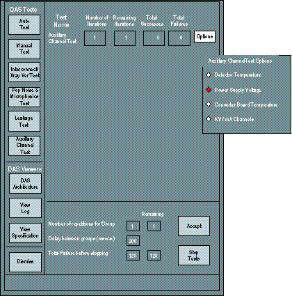

Operating Documentation
Direction 5114043-800, Rev# 9
LightSpeed 3.X Service Methods (Advanced)
Operating Documentation |
The auxiliary channel test primary function is to query the DCB and report specific data, such as detector temperature, power supply voltage, converter board temperature, and KV/mA readings as a function of the DCB. With the exception of the KV/mA channel sub-test, this test uses basic firmware routines to communicate and query the DCB. It does not use the Scan Acquisition process that DDC uses. The reason is that if the DAS fails power-up diagnostics, the error is reported to software and scanning is prevented, either in applications or Diagnostic Data Collection (DDC). This “tool” allows the user to query the DCB and read the supply voltages, or detector / converter board temperatures “real-time”. The only exception is if the 5 vdc digital supply is so low as to not let the DCB function at all, or if the DCB cannot communicate with the HEMRC Controller board in the OBC.
THE DEFAULT
DASTools will collect data and only report the auxiliary channels to display:
CURRENT DETECTOR HEATER TEMPERATURE AND SPEC.
The detector temperature is measured by the DCB as is reported in one of the auxiliary channels. The reported value is in the format shown in Table 1.
Table 1: Detector Temperature Format
| EXPECTED | MEASURED | SPEC. | PASS/FAIL |
|---|---|---|---|
| 36 deg | ± 1.0 |
All DAS power supplies will be measured by the DCB circuitry and reported in the auxiliary channels in the form of voltages. The list of supplies are show in Table 2.
Table 2: Power Supply Voltages
| SUPPLY EXPECTED | MEASURED | SPEC. | PASS/FAIL |
|---|---|---|---|
| +5.0 VDC Digital | +4.75 - +5.25 | ||
| +5.0 VDC Analog | +4.75 - +5.25 | ||
| -5 VDC Analog | -4.75 - -5.25 | ||
| +12 VDC | +11.4 - +12.6 | ||
| -12 VDC | -11.4 - -12.6 | ||
| +12 VDC CAN | +11.4 - +12.6 |
The normal operating temperature range of the MDAS is between 25° - 40° Celsius. If the temperature reaches 55° C, then a warning error message will be posted to the Status Area of the ExamRx Desktop and associated error message in the error log. If the temperature reaches 62° C, then the MDAS will report an over-temperature fault, and will prevent further scanning until the DAS cools and is reset.
DASTools shall query-real-time-the DAS converter board temperature, compare it to spec, and display test output as indicated below.
>>> Converter Board Temperature <<< Converter Board 46 Temp: 27.5C Test Status: PASSED (Expected: 26.0 to 62.0C). Converter Board 47 Temp: 62.5C Test Status: FAIL (Expected: 26.0 to 62.0C). Converter Board 48 Temp: 27.5C Test Status: PASSED (Expected: 26.0 to 62.0C).
These auxiliary channels report the actual KV and mA signals as read from the generator (KV and mA control boards). Since this requires x-ray, this test will not be part of the auto-mode, but can be initiated in the manual test mode with operator intervention. The use of the Scan Enable push-button will be required to initiate x-ray. All x-ray safe guards will be in place, which would terminate x-ray in the event of a system failure, tube cooling limitations, or exposure time limitations.
The test shall take several scans at selected techniques, and the DCB measured KV and mA signals will be compared to the selected techniques, as well as to the system reported measured signals. If the DCB reported signals do not match the system reported output, then this test will fail with the following error message:
DCB board measured KV (or mA) differs than system measured KV (or mA) reading.
If the reading matches the system reported values, but is outside the system spec for selected technique, then the test should fail, but would indicate the DCB aux. channel is working correctly, but KV (or mA) is out of spec. Refer to HV set-up/Troubleshooting.
Table 3: kV / mA Channel Readings Test
| SCAN # | KV | MA | SCAN TIME | FILTER | SPOT | MODE |
|---|---|---|---|---|---|---|
| 1 | 80 | 200 | 1 sec. | Blocked | Sml | Closed |
| 2 | 100 | 100 | 1 sec. | Blocked | Sml | Closed |
| 3 | 120 | 40 | 1 sec. | Blocked | Sml | Closed |
| 4 | 140 | 20 | 1 sec. | Blocked | Sml | Closed |
Illustration 1: Auxiliary Channel Test
